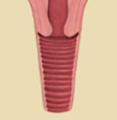
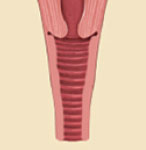

비수술적 시술 (비비브)
여성의 질은 근육으로 되어 있어 임신과 출산의 과정을 겪으면서 자연스럽게 질이 늘어나게 됩니다.
이로 인해 질이 넓어져 자궁경부가 아래로 쳐지게 되어 요실금, 자궁탈출증 등 부인과 질환에 시달리게 됩니다.
수술의 부작용으로는 감염, 출혈, 통증 등의 증상이 있을 수 있어 많은 여성들이 고심을 하게 됩니다.
요즘은 수술적 방법 대신 비수술적 방법인 비비브 시술 쪽으로 관심이 많아지고 있습니다.
수술의 부작용이 걱정된다면 비비브 시술을 고려해 보는 것이 좋습니다.
비비브 시술은 수술에 비해 질 수축 효과는 비슷하지만 출혈과 통증이 없으며, 짧은 시술 시간과 빠른 회복이 가능하며
질 이완증과 함께 질 건조증을 완화시키는 효과가 있습니다.
- 비비브(viveve)시술의 장점
-
마취 없이 진행하며, 시술 시 통증이 없습니다.
출혈이 없습니다.
회복이 빠르기 때문에 시술 후 즉시 일상생활 복귀가 가능합니다.
비비브시술 후 질 콜라겐의 변화
질표면은 차갑게 보호하면서 고온의 에너지를 질 점막하 조직에 조사하여 히팅합니다.
질 점막하 조직에서 자극 반응이 유도되며, 시술 30일부터 피부 조직 내에서 세포가 활성화되고 콜라겐이 생성되기 시작합니다.
질 콜라겐 복구 과정은 시술 후 30~90일까지 계속 되어 통통하게 차오르는 효과를 경험하실 수 있습니다.
-

BEFORE
-

AFTER